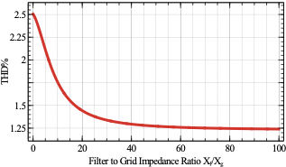
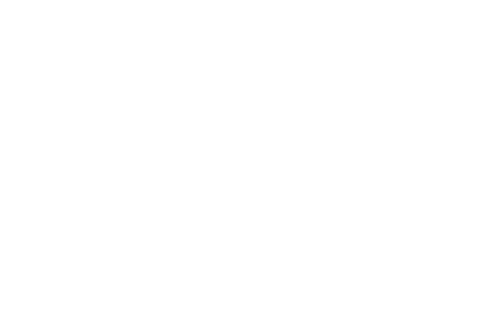

IEEE Smart Grid Project
Virtual oscillator harmonic compensation for weak and distorted grids
This project focused on harmonic mitigation in grid-connected inverters operating under weak-grid and distorted-grid conditions. I designed a virtual-oscillator-based harmonic compensation strategy that uses the Andronov-Hopf oscillator as a nonlinear adaptive fundamental extractor and then cancels the remaining harmonic current through a simple feedforward path.
Why harmonic compensation needed a different approach
Harmonic distortion in grid-connected inverters comes from nonideal switching behavior, dead time, nonlinear loads, and weak-grid interaction. Traditional compensation solutions often solve the problem by adding more structure: resonant loops for individual harmonics, repetitive control, multiple signal-cancellation blocks, or frequency-locked extraction methods. That improves steady-state rejection, but it also introduces tuning burden, phase delay, and greater controller complexity.
My goal was to design a compensation path that stays simple enough for real converter hardware, but still reacts fast and remains effective under distorted and weak-grid conditions where conventional structures can become sluggish or difficult to tune.
How I designed the VO-HC scheme
The central idea was to use the Andronov-Hopf oscillator not for synchronization, but as a nonlinear adaptive filter that extracts the fundamental current component from the distorted grid current. Once the fundamental is extracted, subtracting it from the measured current isolates the harmonic content. I then used a simple proportional compensator in the abc frame to generate the harmonic-cancellation signal.
- The Hopf extractor provides strong fundamental tracking with very small phase delay.
- The extracted fundamental is converted back to abc and subtracted from the measured current.
- The harmonic component is compensated as a feedforward term in parallel with the main SRF current controller.
- When harmonics disappear, the compensator naturally goes to zero and does not interfere with the main loop.
Main technical issues and the solutions I designed
- Problem: Resonant and repetitive methods often need harmonic-specific tuning and introduce phase delay.
Solution: I used one nonlinear extractor plus a simple proportional feedforward path instead of a bank of harmonic-specific regulators. - Problem: Weak-grid and frequency-varying operation can degrade conventional extractors.
Solution: The Hopf dynamics provide inherent frequency adaptivity and do not depend on an external PLL to keep the extractor aligned. - Problem: Harmonic compensation must not disturb the main SRF current controller.
Solution: I designed the compensation as a parallel feedforward channel, so it acts only on the extracted harmonic content. - Problem: Distorted current in weak grids can also worsen the voltage seen at the PCC.
Solution: The compensator improves current quality and, in the tested weak-grid cases, also reduced the observed distortion in the grid voltage.

Experimental Platform
How I validated the method in hardware
The hardware campaign was built around a distorted and weak microgrid rather than an idealized source.

Hardware setup details
- Implemented the experiments on a two-level, two-inverter microgrid.
- Ran inverter 1 in grid-forming mode to emulate the grid and injected 5th and 7th voltage harmonics.
- Ran inverter 2 in grid-following mode with the proposed VO-HC method.
- Added 1.5 mH series impedance to emulate a weak-grid condition at the PCC.
- Used a parallel load and DC-supply return path so the injected power could be absorbed safely during tests.
Results
What the measured results showed
Load-condition results
- 25% load: THD reduced from 18.40% to 2.42%.
- 50% load: THD reduced from 12.57% to 2.11%.
- 100% load: THD reduced from 6.73% to 1.31%.
- The compensation transient stayed around 2-3 ms when enabled.
Comparison against conventional methods
- PR-based compensation improved the same light-load case only to 12.57%, which still failed the 5% target.
- SOGI-based compensation improved the light-load case to 5.15%, still above the target.
- VO-HC kept the compensated THD below 5% across the tested light-, mid-, and full-load cases.
Disturbance robustness
- 49 Hz step test: THD improved from 24.03% to 3.73%.
- Additional 13th harmonic: THD improved from 28.02% to 3.51%.
- 0.2 p.u. grid unbalance: THD improved from 8.45% to 3.61%.
- The feedforward structure responded cleanly when grid harmonics were suddenly removed, because the harmonic command naturally collapsed to zero.

What this work says about how I design converter controllers
This project is a good representation of how I approach power-quality problems: I do not only tune a controller until a waveform looks cleaner. I try to identify the structural reason why conventional methods struggle, redesign the extraction or compensation path around that limitation, and then prove the result experimentally under the nonideal conditions where the method is actually supposed to work.
In this case, the final method is simple in implementation, but it came from combining nonlinear oscillator modeling, control integration, gain selection, weak-grid stability thinking, and experimental validation on a microgrid platform. That mix of theory, implementation, and measured verification is a consistent pattern across my work.